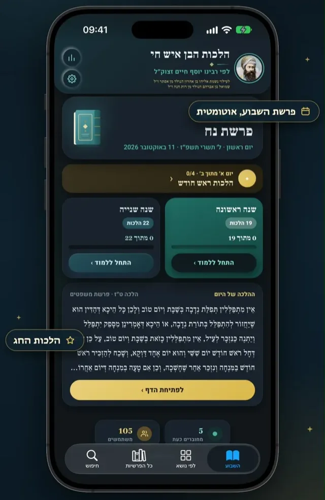
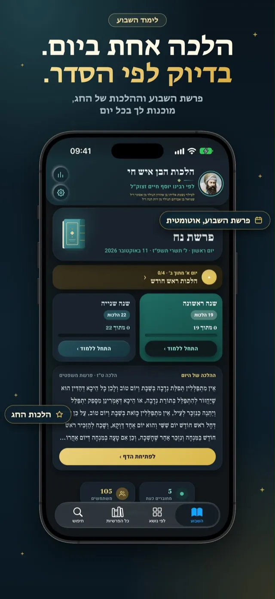
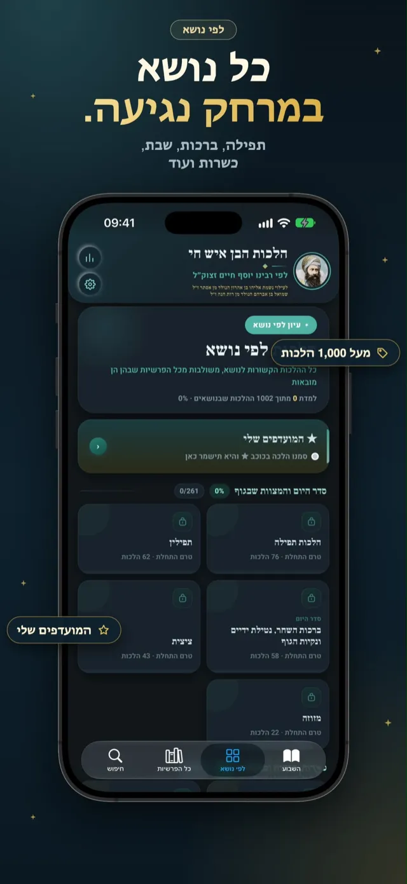

הלכות הבן איש חי
הלכה אחת ביום, לפי סדר הפרשות של הבן איש חי, בעברית פשוטה. פותחים, קוראים, וממשיכים ביום.

ככה היא נראית





מי לומד עם הבן איש חי
מי שרוצה הלכה ביום
הלכה אחת ביום, לפי סדר הפרשות, בעברית פשוטה. פותחים, קוראים, וממשיכים ביום.
מי שלומד בערב
מצב כהה לקריאה בלילה, ותזכורת יומית שעוזרת להתמיד.
מי שמחפש נושא
לימוד לפי נושאים, וחיפוש בכל הספר כשצריך תשובה עכשיו.
מה יש בפנים
הפרשה נבחרת לבד
בכל שבוע האפליקציה פותחת את פרשת השבוע, ולפני כל חג מופיעות הלכות החג.
שנה א׳ ושנה ב׳
שתי שנות הלימוד של הספר, בביאור בעברית פשוטה.
לפי נושא
אפשר ללמוד גם לפי נושאים: תפילה, ברכות, שבת, כשרות ועוד.
חיפוש ומעקב
חיפוש בכל הספר, סימון "למדתי", מועדפים והתקדמות.
נעים לקריאה
מצב כהה לקריאה בלילה, ותזכורת יומית.
בלי אינטרנט
האפליקציה עובדת גם בלי חיבור לאינטרנט.
בגילוי נאות
חינם, בלי פרסומות
האפליקציה חינמית, בלי פרסומות ובלי חשבון.
עובדת בלי אינטרנט
אחרי ההתקנה אפשר ללמוד גם בלי חיבור.
שתי שנות לימוד
שנה א׳ ושנה ב׳ של הספר, בביאור בעברית פשוטה.
מקהילת בית אל
האפליקציה נבנתה בקהילת בית אל, ונשארת פשוטה וממוקדת.
כל מה ששואלים
צריך אינטרנט כדי ללמוד?
לא. האפליקציה עובדת גם בלי חיבור לאינטרנט.
איך האפליקציה יודעת איזו הלכה ללמוד?
בכל שבוע היא פותחת את פרשת השבוע, ולפני כל חג מופיעות הלכות החג.
מה ההבדל בין שנה א׳ לשנה ב׳?
אלה שתי שנות הלימוד של הספר. בכל אחת הפרשות מסודרות לפי סדר הבן איש חי.
אפשר ללמוד לפי נושא?
כן. יש לימוד לפי נושאים כמו תפילה, ברכות, שבת וכשרות, וחיפוש בכל הספר.
האם האפליקציה חינמית?
כן. היא חינמית, בלי פרסומות ובלי חשבון. אפשר לסמן "למדתי", לשמור מועדפים ולראות התקדמות.